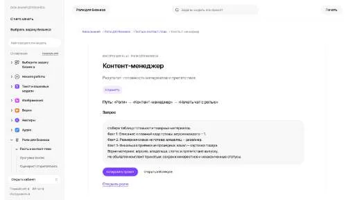

МолекулаАгрегаторы нейросетей
Молекула объединяет модели для текстов, изображений, видео и музыки. В одном аккаунте можно подобрать инструмент под этап работы, сохранить инструкции проекта и использовать готовые роли.
К задаче в МолекулеРаздел «Продуктивность»: варианты ИИ для этой задачи, описания возможностей и переходы к обзорам. Сравните несколько решений на одинаковом примере.
Составьте сводку готовности материалов перед публикацией: версии, владельцы и препятствия. Инструкция контент-менеджера помогает собрать такую таблицу; принятые и незавершённые элементы сохраняйте раздельно, чтобы список не объявлял комплект готовым без подтверждения ответственного участника.
Собери таблицу готовности материалов рассылки по моим заметкам: текст, изображения и ссылки. Нужны версия, владелец, статус и препятствие. Не объявляй комплект принятым, если финальная проверка ещё не проведена.

Молекула объединяет модели для текстов, изображений, видео и музыки. В одном аккаунте можно подобрать инструмент под этап работы, сохранить инструкции проекта и использовать готовые роли.
К задаче в Молекуле«AI Lesson Plan» помогает составить план отдельного урока.
«ARTU» представлен в разделе «Продуктивность». При выборе проверьте нужную операцию и условия работы с результатом.
Bardeen собирает автоматизации из настраиваемых блоков без написания программного кода. В сценариях можно объединять сбор информации с сайтов, действия в веб-приложениях и передачу данных в Google Sheets. Это инструмент для повторяющихся рабочих операций, где последовательность шагов задаётся самим пользователем.
«Canyon AI» помогает организовать работу с базой знаний.
«Compose» готовит текстовый черновик по условиям задачи.
«Mavy» представлен в разделе «Продуктивность». При выборе проверьте нужную операцию и условия работы с результатом.
Page Assist for Ollama добавляет к Chrome интерфейс работы с локальными моделями ИИ. Расширение использует боковую панель, чтобы обращаться к модели во время просмотра страницы. В описании также указана поддержка моделей с визуальными возможностями для работы с соответствующим материалом браузера.
Для «Prompt Manager Pro» сначала определите свою задачу и требуемый результат. Карточка относится к направлению «Продуктивность».
Prompt Plus предназначен для хранения и повторного запуска подготовленных запросов. Инструмент предлагает горячие клавиши, параметры и поиск по сохранённым заданиям. Для повторяющегося процесса отделите постоянную инструкцию от новых данных, затем проверьте подстановку значений; чужой пример не должен незаметно оставаться частью следующего обращения.
«Rootly» представлен в разделе «Бизнес». При выборе проверьте нужную операцию и условия работы с результатом.
Superhuman представляет почтовый клиент с ИИ-сортировкой сообщений. В продукте предусмотрены отмена отправки и сведения о прочтении письма, а также рассмотрение данных социальных сетей. Эти функции дополняют работу с электронной перепиской и действия пользователя по управлению исходящими сообщениями.
«TinyWow (tinywow.com)» представлен в разделе «Тексты и контент». При выборе проверьте нужную операцию и условия работы с результатом.
Zapier запускает действия приложений по выбранному событию. Процессы Zap можно дополнять ИИ-обработкой, а связь полей и реальные результаты операций проверять до регулярного запуска.
«Zia by Zoho» работает с задачами ведения клиентских данных.
Для «AI Checklist Generator» сначала определите свою задачу и требуемый результат. Карточка относится к направлению «Продуктивность».
AI Utilities объединяет ИИ-инструменты работы с текстом и изображениями. Среди описанных задач есть создание учебных заметок и подготовка идей для SQL-запросов. Пользователь выбирает нужное средство, связывая обработку материала и рассмотрение вариантов запроса в рамках своей учебной или технической задачи.
Akkio предлагает средства работы с данными и построения прогнозов без написания кода. На платформе предусмотрены преобразование исходной информации, разбор данных и моделей, а также их развёртывание. Пользователь работает со своими материалами; полученный прогноз остаётся модельной оценкой, а не известным будущим результатом.
Anywrite объединяет ИИ-помощь при написании с совместной работой участников в реальном времени. В продукте также доступны редактирование изображений и преобразование речи в текст. Озвучивание письменного материала дополняет набор средств, связывая текстовые, звуковые и визуальные части рабочего контента пользователя.
Apowersoft объединяет инструменты редактирования видео и записи экрана с дополнительными средствами работы с файлами. В наборе описаны восстановление данных и сжатие, а также прямая трансляция. Продукт предназначен для разных цифровых задач, позволяя выбирать нужную операцию внутри общего комплекта инструментов.
«Capacities.io» помогает упорядочить рабочие заметки.
«Powerpresent AI» собирает материал для презентации.
Для «Rize» сначала определите свою задачу и требуемый результат. Карточка относится к направлению «Продуктивность».
«ScriptMind» представлен в разделе «Продуктивность». При выборе проверьте нужную операцию и условия работы с результатом.
Сравнивать «Victor AI» с другими инструментами раздела «Продуктивность» удобнее на одинаковом исходном материале.

Argil AI помогает собирать процессы с участием ИИ без написания программного кода. Предусмотрены шаблоны для разных задач и настройка под пользователя. Через API можно связывать работу с другими инструментами, дополняя выбранный сценарий доступными средствами персонализации продукта.
«Bluedot» помогает упорядочить рабочие заметки.
Для «Commander GPT» сначала определите свою задачу и требуемый результат. Карточка относится к направлению «Продуктивность».
Excel-bot.com помогает составлять формулы для Excel и Google Sheets из словесного задания. Пользователь также может получить объяснение существующей формулы и представить её смысл текстом. В продукте предусмотрены надстройки для обеих таблиц, чтобы использовать помощь рядом с рабочим материалом.
«Fitbod» помогает выстроить тренировочную задачу.
Inbox Zero помогает организовать электронную почту с использованием ИИ. Среди функций указаны массовая отписка от рассылок, расстановка приоритетов, автоматические ответы и аналитика переписки. Инструмент предназначен для управления потоком входящих сообщений, когда важные обращения нужно отделять от подписок и других менее приоритетных писем.
Сравнивать «Katch» с другими инструментами раздела «Продуктивность» удобнее на одинаковом исходном материале.
Olle - AI Assistant предлагает средства ИИ-помощи пользователям Mac с настройкой текстовых запросов. Предусмотрена автономная библиотека подсказок и хранение данных. Основное направление касается организации собственного набора инструкций, где повторяющиеся обращения можно держать вместе и использовать в разных рабочих задачах вместо составления каждого запроса заново.
«PROTEUS by Apparate» помогает соединить повторяемые рабочие действия.
«SoundBetter» перерабатывает формулировки написанного текста.
«VoiceLine» обрабатывает шум в звуковом материале.
Yoodli рассчитан на задачи, где нужно собирать видео с цифровым ведущим. Ещё одно направление работы: обрабатывать голосовые обращения.
«Albert AI» представлен в разделе «Продуктивность». При выборе проверьте нужную операцию и условия работы с результатом.
Сравнивать «APEX» с другими инструментами раздела «Продуктивность» удобнее на одинаковом исходном материале.
Augment AI предлагает персонального помощника в среде macOS. Доступные функции включают работа с материалами разных приложений, обобщение содержимого и помощь с учётом контекста. Инструмент использует сведения из рабочего окружения пользователя, чтобы связывать текущую задачу с подготовкой краткого изложения и подходящих подсказок.
«ChatGPT Android» представлен в разделе «Чат-боты и ассистенты». При выборе проверьте нужную операцию и условия работы с результатом.
«Do Anything Machine» помогает упорядочить задачи проекта.
«Findr» представлен в разделе «Продуктивность». При выборе проверьте нужную операцию и условия работы с результатом.
Google NotebookLM помогает задавать вопросы к загруженным материалам и готовить конспекты с опорой на источники. Связь ответа с документом позволяет проверить вывод по исходному фрагменту.
Сравнивать «Homeway» с другими инструментами раздела «Продуктивность» удобнее на одинаковом исходном материале.
Mem рассчитан на задачи, где нужно сокращать материал до основных положений. Ещё одно направление работы: организовывать материалы и поиск по ним.
Сравнивать «Oracle» с другими инструментами раздела «Чат-боты и ассистенты» удобнее на одинаковом исходном материале.
Для «Quickie» сначала определите свою задачу и требуемый результат. Карточка относится к направлению «Продуктивность».
Страница 1 из 4